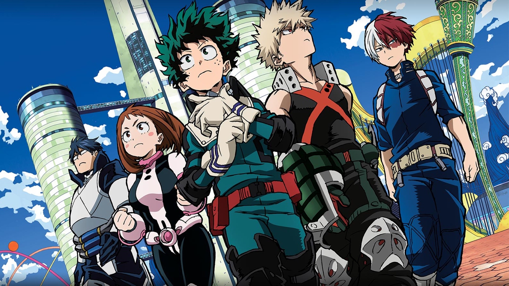
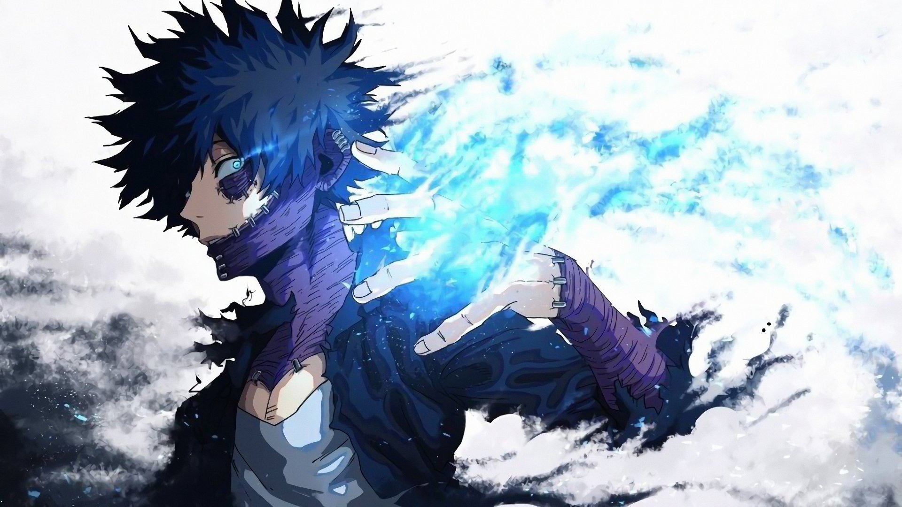

My Hero Academia(ou Boku no Hero) conta a história de Izuku Midoriya, um jovem que nasceu sem Indivualidade em um mundo em que 80% da população possui pelo menos uma, fazendo com que seu sonho de ser o Herói nº1 se mostre inatingível. Conheça mais em 'Saiba Mais'

O anime é repleto de personagens com as mais diversas personalidades, diferentes valores e ideais. Conheça sobre os principais personagens e suas características em 'Saiba Mais'.

No mundo de My Hero Academia(ou Boku no Hero) a maioria das pessoas possuem pelo menos uma individualidade(um poder que é uma derivação da individualidade do pais). Conheça sobre as individualidades do principais personagens em 'Saiba Mais'.